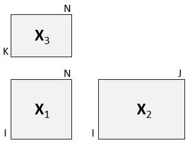

Simultaneous decomposition of three blocks connected in an L pattern.
Arguments
- X1
matrixof size IxN (middle matrix)- X2
matrixof size IxJ (left matrix)- X3
matrixof size KxN (top matrix)- ncomp
number of L-PLS components
- doublecenter
logicalindicating if centering should be done both ways for X1 (default=TRUE)- scale
logical vectorof length three indicating if each of the matrices should be autoscaled.- type
characterindicating type of L-PLS ("exo"=default, "exo_ort" or "endo")- impute
logicalindicating if SVD-based imputation of missing data is required.- niter
numericgiving number of iterations in component extraction loop.- subsetX2
vectordefining optional sub-setting of X2 data.- subsetX3
vectordefining optional sub-setting of X3 data.- ...
Additional arguments, not used.
Value
An object of type lpls and multiblock containing all results from the L-PLS
analysis. The object type lpls is associated with functions for correlation loading plots,
prediction and cross-validation. The type multiblock is associated with the default functions
for result presentation (multiblock_results) and plotting (multiblock_plots).
Details
Two versions of L-PLS are available: exo- and endo-L-PLS which assume an outward or inward relationship between the main block X1 and the two other blocks X2 and X3.
The exo_ort algorithm returns orthogonal scores and should be chosen for visual
exploration in correlation loading plots. If exo-L-PLS with prediction is the main purpose
of the model then the non-orthogonal exo type L-PLS should be chosen for which the
predict function has prediction implemented.

References
Martens, H., Anderssen, E., Flatberg, A.,Gidskehaug, L.H., Høy, M., Westad, F.,Thybo, A., and Martens, M. (2005). Regression of a data matrix on descriptors of both its rows and of its columns via latent variables: L-PLSR. Computational Statistics & Data Analysis, 48(1), 103 – 123.
Sæbø, S., Almøy, T., Flatberg, A., Aastveit, A.H., and Martens, H. (2008). LPLS-regression: a method for prediction and classification under the influence of background information on predictor variables. Chemometrics and Intelligent Laboratory Systems, 91, 121–132.
Sæbø, S., Martens, M. and Martens H. (2010) Three-block data modeling by endo- and exo-LPLS regression. In Handbook of Partial Least Squares: Concepts, Methods and Applications. Esposito Vinzi, V.; Chin, W.W.; Henseler, J.; Wang, H. (Eds.). Springer.
See also
Overviews of available methods, multiblock, and methods organised by main structure: basic, unsupervised, asca, supervised and complex.
Functions for computation and extraction of results and plotting are found in lpls_results.
Examples
# Simulate data set
sim <- lplsData(I = 30, N = 20, J = 5, K = 6, ncomp = 2)
X1 <- sim$X1; X2 <- sim$X2; X3 <- sim$X3
lp <- lpls(X1,X2,X3) # exo-L-PLS